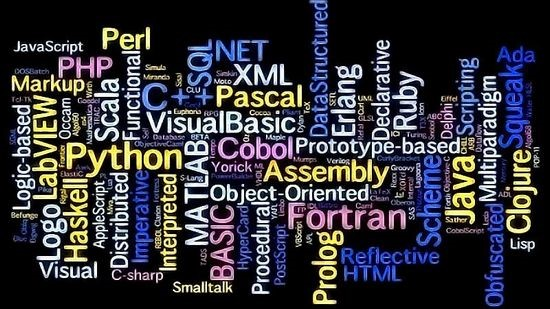
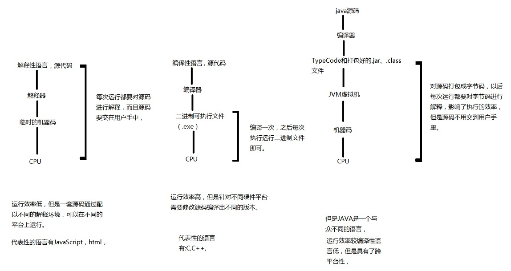

解释性语言与编译性语言
当我们想要让计算机做一些事的时候，需要让它运行一些指令，程序就是计算机指令，因为计算机是二进制的，所以其指令也必然是二进制指令，那么这些指令的编写要遵循一定的语法，这个语法所形成的语言，就是计算机语言，分为三种：机器语言，汇编语言，高级语言。

当我们想要让计算机做一些事的时候，需要让它运行一些指令，程序就是计算机指令，因为计算机是二进制的，所以其指令也必然是二进制指令，那么这些指令的编写要遵循一定的语法，这个语法所形成的语言，就是计算机语言，分为三种：机器语言，汇编语言，高级语言。
机器语言是一种指令集的体系。这种指令集，称机器码，是电脑的CPU可直接解读的数据。（例：0101010110101101011010）
汇编语言是面向机器的程序设计语言。在汇编语言中，用助记符代替机器指令的操作码，用地址符号（Symbol）或标号（Label）代替指令或操作数的地址，如此就增强了程序的可读性并且降低了编写难度，所以也叫符号语言。使用汇编语言编写的程序，机器不能直接识别，还要由汇编程序或者叫汇编语言编译器（即汇编器）转换成机器指令。由于汇编语言依赖于硬件体系，且助记符量大难记，于是人们又发明了更加易用的所谓高级语言。（例：MOV ADD）
高级语言是高度封装了的编程语言，与低级语言相对。它是以人类的日常语言为基础的一种编程语言，使用一般人易于接受的文字来表示，从而使程序编写员编写更容易，亦有较高的可读性，以方便对电脑认知较浅的人亦可以大概明白其内容。在这种语言下，其语法和结构更类似汉字或者普通英文，且由于远离对硬件的直接操作，使得一般人经过学习之后都可以编程。
###编译型语言与解释型语言
计算机不能直接理解高级语言，只能理解机器语言，所以必须要把高级语言翻译成机器语言，计算机才能执行高级语言编写的程序。（计算机只能执行机器语言：我们要执行高级语言编的代码，就只能用编译器把它变成机器语言）
翻译有两种方式：a.编译b.解释。两种方式主要是翻译的时间不同。
编译型语言：编译型语言写的程序执行之前，需要一个专门的编译过程，把程序编译成机器语言文件；比如，exe文件，以后运行的话就不用重新编译了，直接使用编译的结果就行了；因为翻译只做了一次，运行时不需要翻译，所以编译型语言的程序执行效率高！（专门编译，然后执行直接用）（效率高）
解释性语言：解释性语言的程序不需要编译，省了道工序，解释性语言在运行程序的时候才翻译，比如解释性basic语言，专门有一个解释器能够直接执行basic程序，每个语句都是执行的时候才翻译；这样解释性语言每执行一次就要翻译一次，效率比较低；（运行程序时才翻译，每执行一次，就要翻译一次）（效率低）
脚本语言
脚本语言（Javascript，VBScript等）介于HTML和C，C++，Java,C#等编程语言之间；HTML常用于格式和链结文本。而编程语言通常用于向机器发出一系列复杂的指令；
- a.脚本语言与编程语言也有很多相似之处，其函数与编程语言比较相像一些，其也涉及到变量。与编程语言之间最大的区别是编程语言的语法和规则更为严格和复杂一些；
- b.脚本也是一种语言，其同样由程序代码组成；（脚本语言一般都有相应的脚本引擎解释执行。他们一般需要解释器才能运行。JavaScript，ASP,PHP,PERL都是脚本语言。C/C++编译、链接后，可形成独立执行的exe文件）
- c.脚本语言是一种解释性的语言，例如VBscript，javascript,installshield script等等，它不像c\c++等可以编译成二进制代码，以可执行文件的形式存在。脚本语言不需要编译，可以直接用，由解释器来负责解释。
- d.脚本语言一般都是以文本形式存在，类似于一种命令；举个例子：如果你建立了一个程序，叫aaa.exe，可以打开.aa为扩展名的文件。你为.aa文件的编写指定了一套规则语言，当别人编写了.aa文件后，你的程序用这种规则来理解编写人的意图，并做出回应，这一套规则就是脚本语言；
Java语言
Java语言：java语言既要编译，又要解释；编译只有一次，程序执行时解释执行；通过编译器，把java程序翻译成一种中间代码——字节码，然后通过JVM解释成相应平台的语言；
下图是这些语言所编写成的运行文件的一个抽象的描述
